The 23 research counties account for 1,067,659 of 1,327,591 four-ticket 2024 presidential votes (80.4207771821%). This measures historical volume, not geographic approval. The 2022 state layer is a full native reference covering all 105 counties, with 4,749 source polygons. County map units and five historical result families overlap and are never summed.
1. Johnson 20091
Reference; November approval unavailable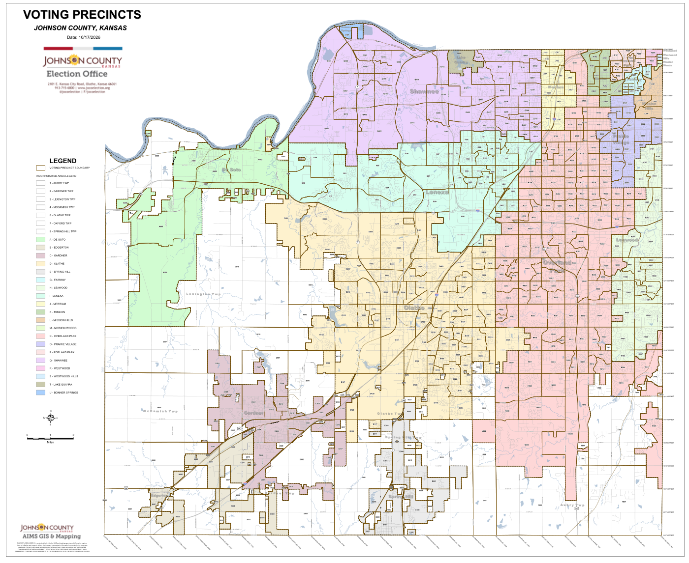
County/reference asset. Open preview for detail.
County AIMS precinct polygons and county election precinct PDF; snapshot reference.
Vintage: PDF printed 10/17/2026; SHP election effective date unstated.
Gap: 2024 election-day frozen geometry and November2026 approval/crosswalk unavailable; 693 GIS features are not 693 result units.
johnson-shp (gzip, 2,217,681 bytes)
johnson-pdf (identity, 10,660,824 bytes)
Complete official KLRD2022 county reference: 595 source polygons
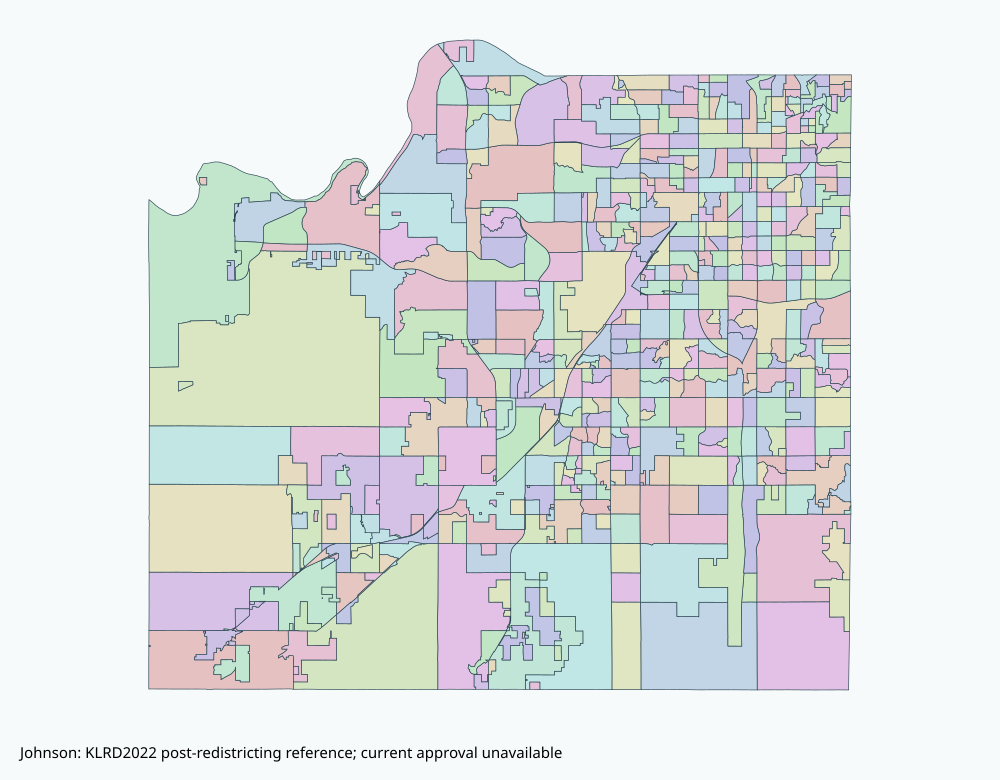
Original native state pages stored once; full county FID list in inventory.json. No current equivalence assumed.
Original state downloadsFull five historical native source families · All map attributes
2. Sedgwick 20173
Reference; November approval unavailable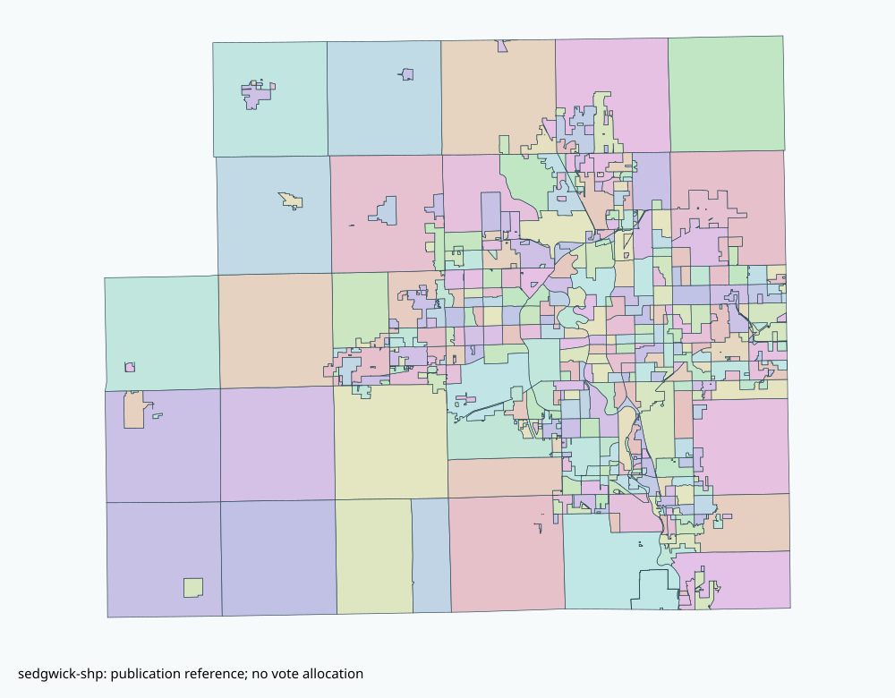
County/reference asset. Open preview for detail.
Complete county GIS shapefile, PolygonZ; all 541 records retained.
Vintage: Download snapshot; embedded metadata and response clocks retained. Web catalog approximate439 is not actual541 downloaded records.
Gap: Current legal effective/November approval and historical mapping unavailable. Z/M and original invalid geometries retained.
sedgwick-shp (gzip, 775,486 bytes)
Complete official KLRD2022 county reference: 548 source polygons
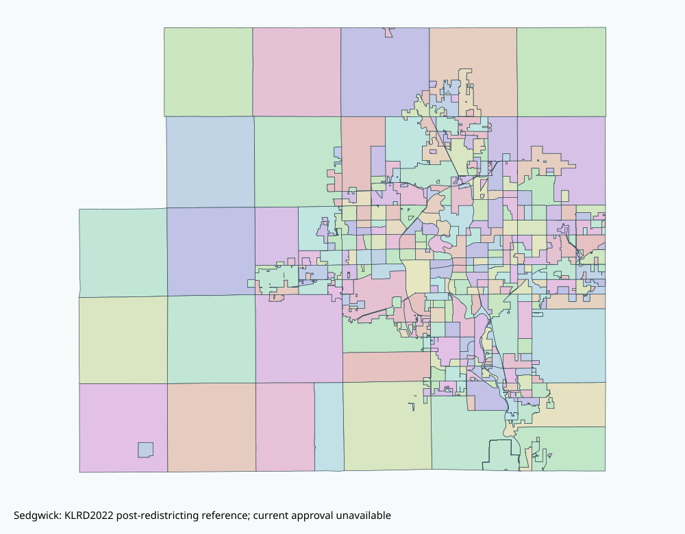
Original native state pages stored once; full county FID list in inventory.json. No current equivalence assumed.
Original state downloadsFull five historical native source families · All map attributes
3. Shawnee 20177
Reference; November approval unavailable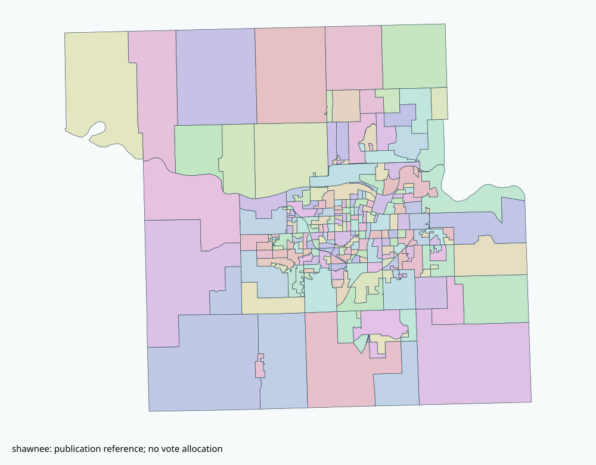
County/reference asset. Open preview for detail.
Election-office-linked native precinct service,247 features; four true-curve objects preserved.
Vintage: Current published service snapshot; LASTUPDATE values retained per object, not November approval.
Gap: Four curve geometries cannot be tested natively with GEOS; preview uses explicitly separate server linearization. No historical/current crosswalk.
Native original response downloads
shawnee-features-000 (gzip, 143,781 bytes)
shawnee-features-001 (gzip, 318,508 bytes)
shawnee-features-002 (gzip, 326,225 bytes)
Complete official KLRD2022 county reference: 272 source polygons
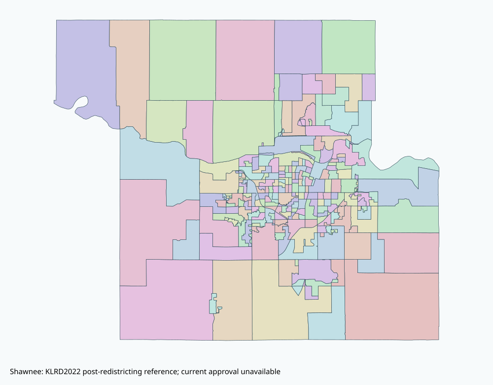
Original native state pages stored once; full county FID list in inventory.json. No current equivalence assumed.
Original state downloadsFull five historical native source families · All map attributes
4. Douglas 20045
Reference; November approval unavailable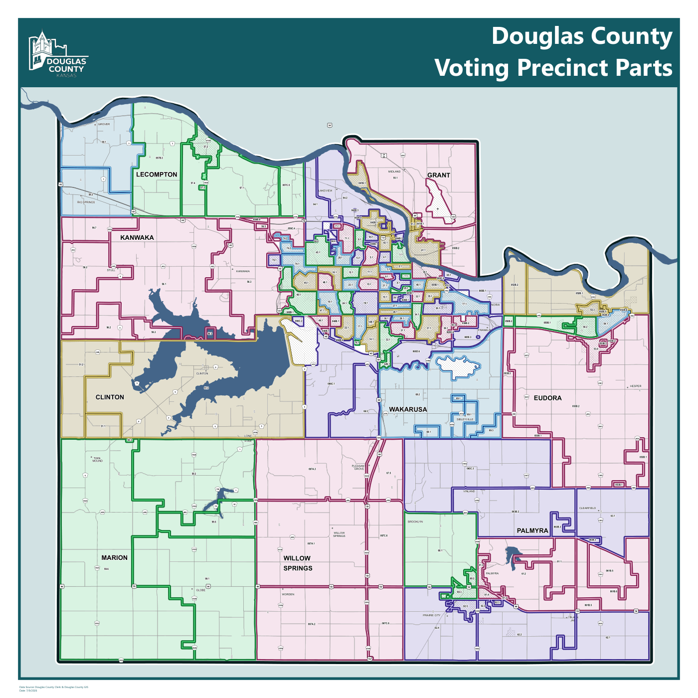
County/reference asset. Open preview for detail.
County election maps page→media6038→county GIS portal original PDF, Voting Precinct Parts.
Vintage: Printed 7/9/2026.
Gap: Precinct parts are source map units, not proved equal to result rows; no approved November crosswalk or frozen2024 geometry.
douglas-pdf (identity, 2,311,020 bytes)
Complete official KLRD2022 county reference: 182 source polygons
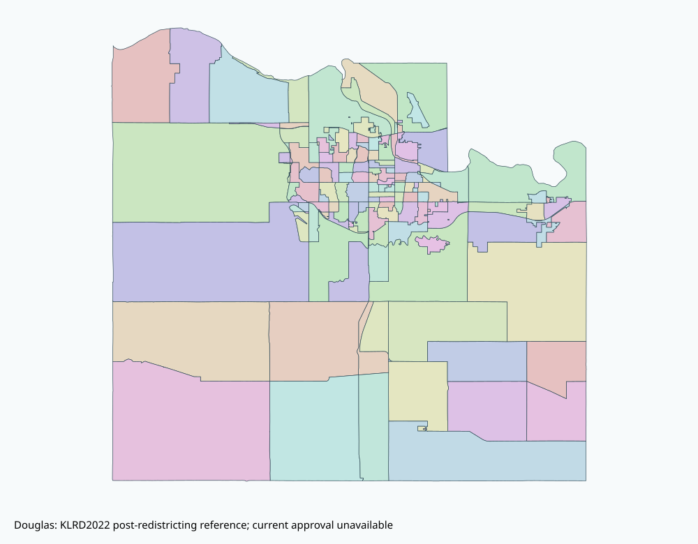
Original native state pages stored once; full county FID list in inventory.json. No current equivalence assumed.
Original state downloadsFull five historical native source families · All map attributes
5. Wyandotte 20209
Reference; November approval unavailable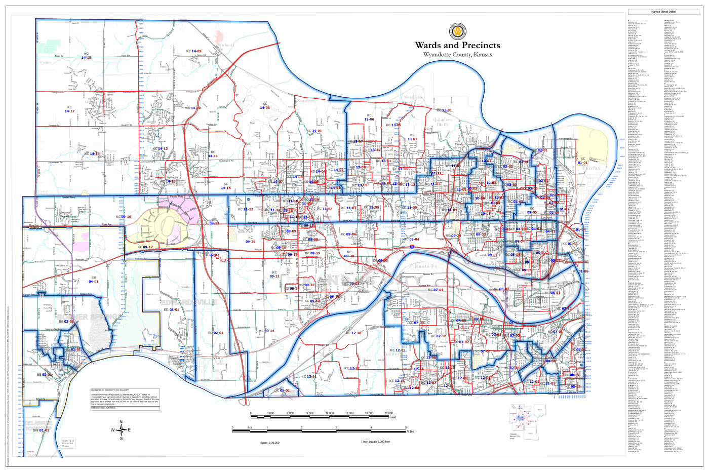
County/reference asset. Open preview for detail.
Actual official GIS county Wards and Precincts PDF. Service attributes retained separately,153 rows, all geometry absent.
Vintage: PDF printed6/17/2025. Older2014 metadata is separate historical evidence, not PDF effective date.
Gap: Current service returns no geometry under true/falsecurve requests; linked old shapefile404. November2026 physical equivalence/approval unavailable.
wyandotte-pdf (identity, 3,987,348 bytes)
Complete official KLRD2022 county reference: 155 source polygons
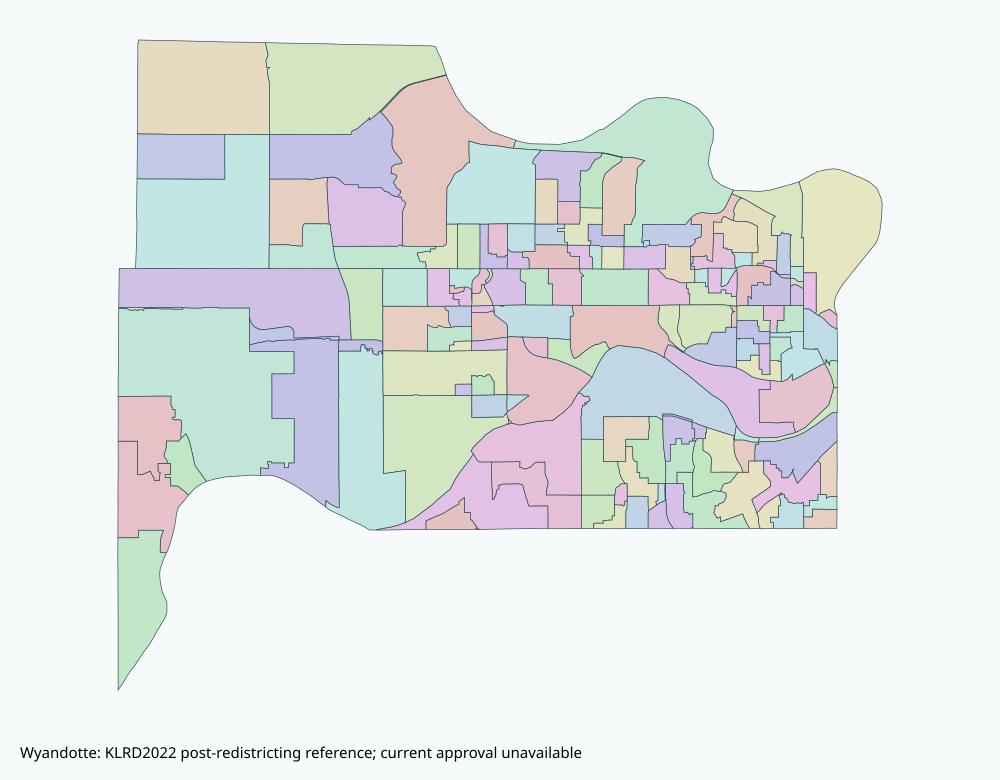
Original native state pages stored once; full county FID list in inventory.json. No current equivalence assumed.
Original state downloadsFull five historical native source families · All map attributes
6. Leavenworth 20103
Reference; November approval unavailable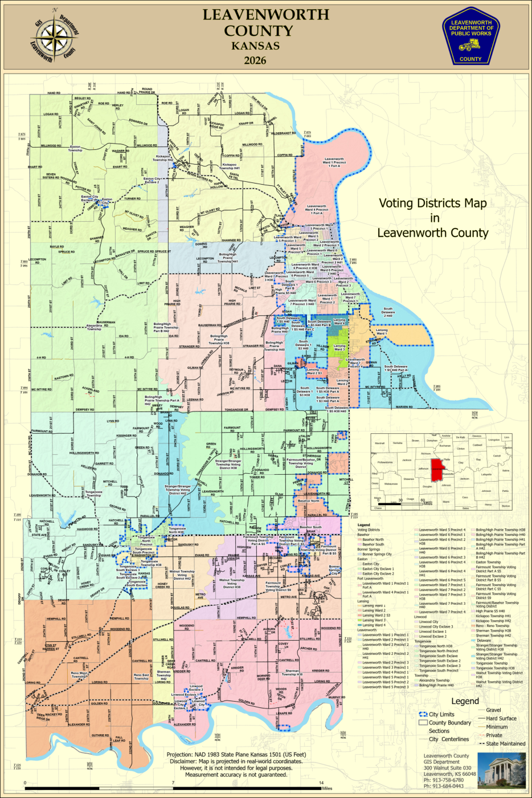
County/reference asset. Open preview for detail.
County GIS download index original2026 county Voting Districts PDF plus separate2025 election-page reference.
Vintage: 2026/2025 publications retained separately; printed map dates and PDF metadata in extracts.
Gap: County-linked shapefile403 at vendor redirect; PDFs are actual maps but no machine-native geometry/current November approval.
leavenworth-2026-pdf (identity, 3,746,871 bytes)
leavenworth-pdf (identity, 9,223,194 bytes)
Complete official KLRD2022 county reference: 92 source polygons
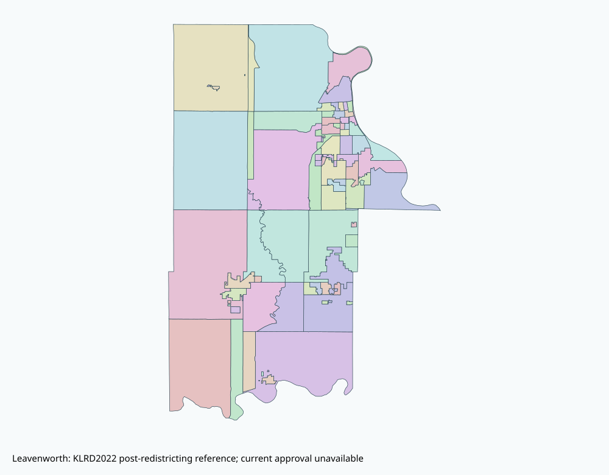
Original native state pages stored once; full county FID list in inventory.json. No current equivalence assumed.
Original state downloadsFull five historical native source families · All map attributes
7. Butler 20015
Reference; November approval unavailable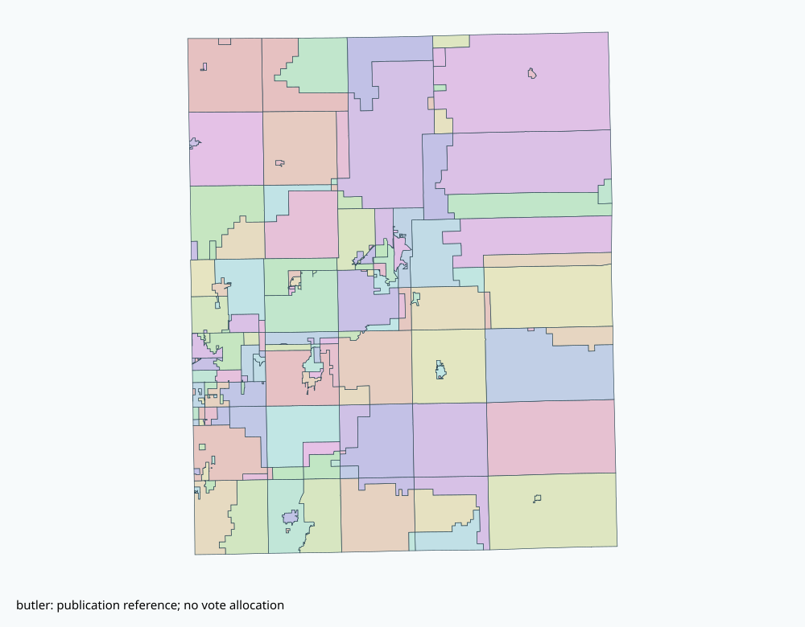
County/reference asset. Open preview for detail.
County elections→Elections Hub encodedstate→Voting Precincts Experience→webmap→Voting District native layer17,193 records; precinctid/partid/enclave fields retained.
Vintage: Current publication snapshot; created/edited timestamps retained, not election-effective approval.
Gap: Voting districts include precinct parts; no approved result crosswalk or November boundary certificate.
Native original response downloads
butler-features-000 (gzip, 226,139 bytes)
butler-features-001 (gzip, 283,009 bytes)
Complete official KLRD2022 county reference: 87 source polygons
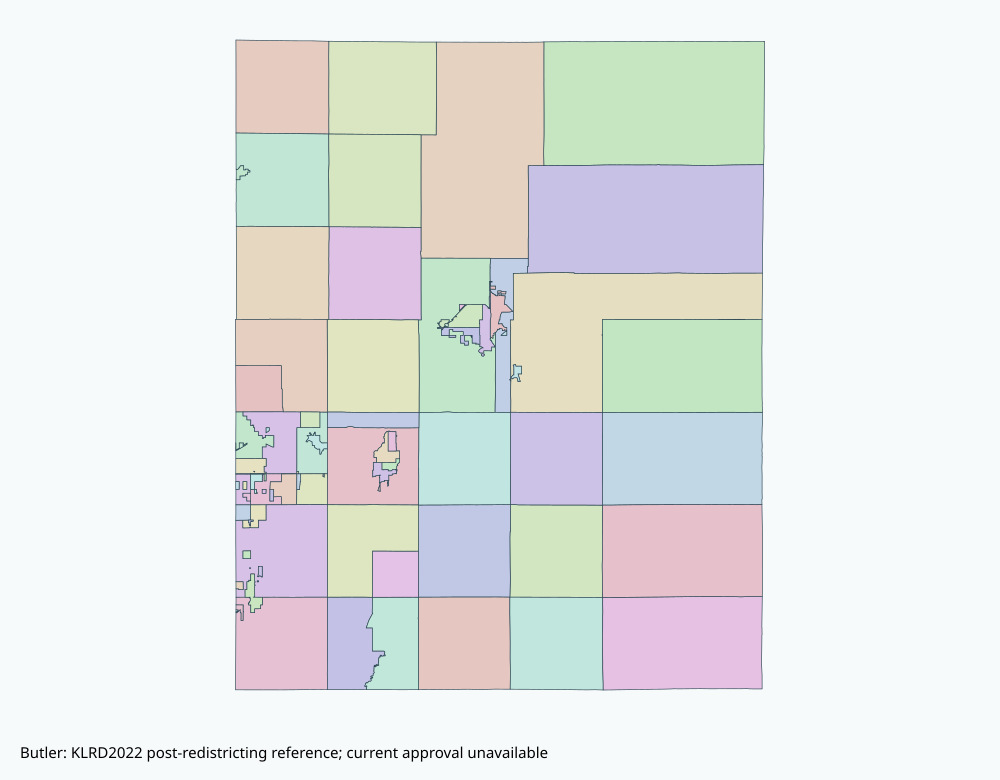
Original native state pages stored once; full county FID list in inventory.json. No current equivalence assumed.
Original state downloadsFull five historical native source families · All map attributes
8. Reno 20155
Reference; November approval unavailable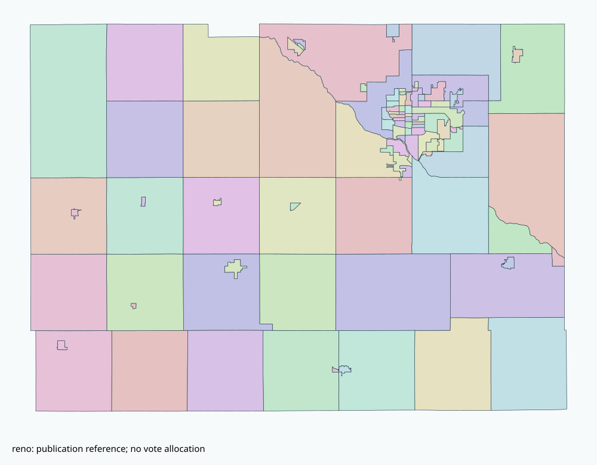
County/reference asset. Open preview for detail.
Agency-attributed Reno ArcGIS precinct layer3,105 full native polygons; commission districts not substituted.
Vintage: Catalog item/service clocks retained; county-branded hub still contains2025 election text, notNovember2026.
Gap: Direct county Election-Maps/Maps-Parcel-Information/Elections blocked403; actual county-site outbound link to this ArcGIS product not recovered. Agency attribution via Reno org/item/hub is retained as a provenance gap; 2022 official state fallback remains authoritative historical reference.
Native original response downloads
reno-features-000 (gzip, 159,093 bytes)
reno-features-001 (gzip, 27,700 bytes)
Complete official KLRD2022 county reference: 93 source polygons
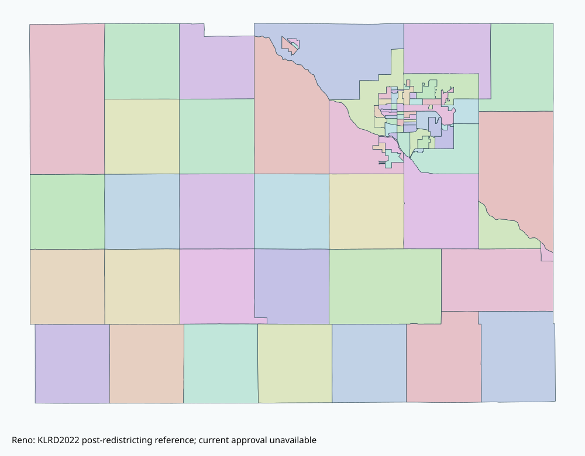
Original native state pages stored once; full county FID list in inventory.json. No current equivalence assumed.
Original state downloadsFull five historical native source families · All map attributes
9. Riley 20161
Reference; November approval unavailable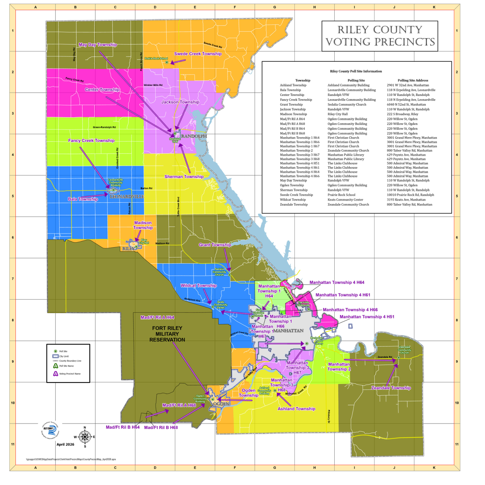
County/reference asset. Open preview for detail.
County election authority supplies county township/precinct and Manhattan precinct originals; complementary views retained.
Vintage: County and city map printedApril2026 (county raster visually read); filenames/HTTP metadata separate.
Gap: No approved November2026 boundary/results crosswalk or certified frozen2024 snapshot.
riley-pdf (identity, 1,334,930 bytes)
riley-city-pdf (identity, 6,420,316 bytes)
Complete official KLRD2022 county reference: 97 source polygons
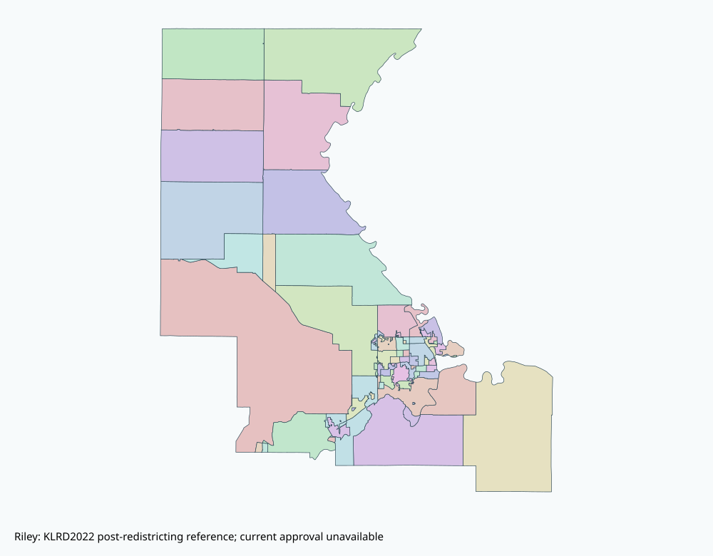
Original native state pages stored once; full county FID list in inventory.json. No current equivalence assumed.
Original state downloadsFull five historical native source families · All map attributes
10. Saline 20169
Reference; November approval unavailable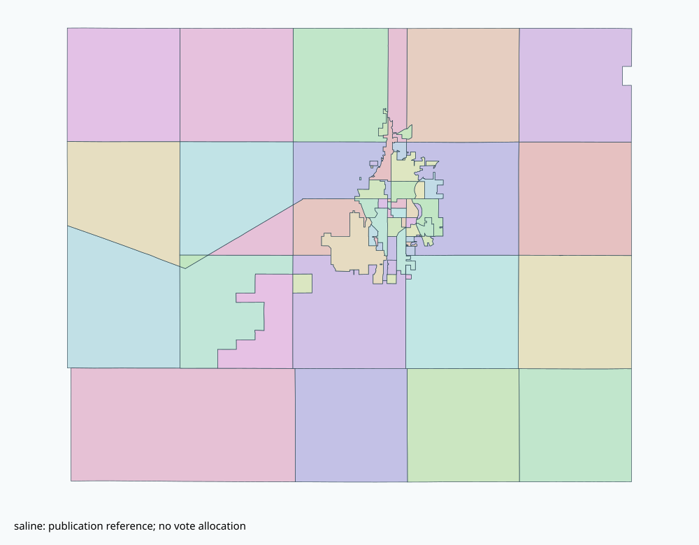
County/reference asset. Open preview for detail.
County GIS page web-reader observed Voting Precincts link→app→webmap→75 native precinct polygons; Z/M including nullM retained.
Vintage: Current service snapshot; field2022 codes are original attributes, not current approval.
Gap: County parent originalHTTP403; web-reader observation retained separately. No November2026 approval/crosswalk.
Native original response downloads
saline-features-000 (gzip, 155,002 bytes)
Complete official KLRD2022 county reference: 89 source polygons
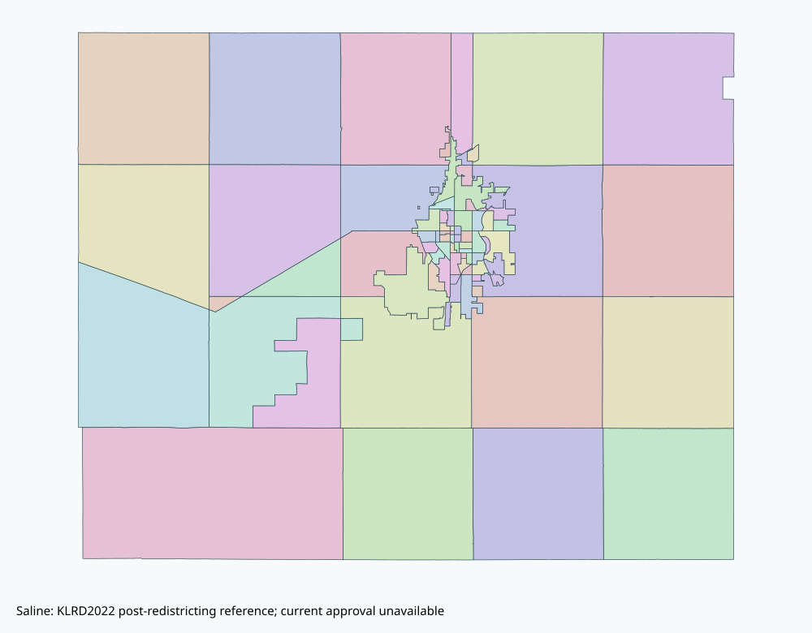
Original native state pages stored once; full county FID list in inventory.json. No current equivalence assumed.
Original state downloadsFull five historical native source families · All map attributes
11. Miami 20121
Reference; November approval unavailable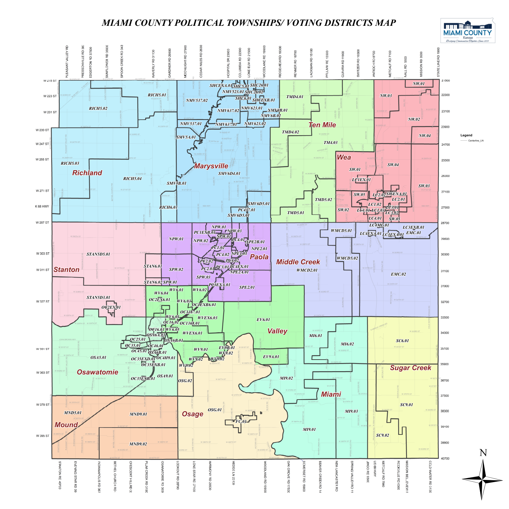
County/reference asset. Open preview for detail.
County election page original2026 precinct map; printed title Political Townships/Voting Districts, full native labels retained.
Vintage: Landing label2026; original page/metadata retained, explicit printed effective date unstated.
Gap: No approved November2026 precinct/result crosswalk or machine-native geometry from this PDF.
miami-pdf (identity, 2,854,294 bytes)
Complete official KLRD2022 county reference: 93 source polygons
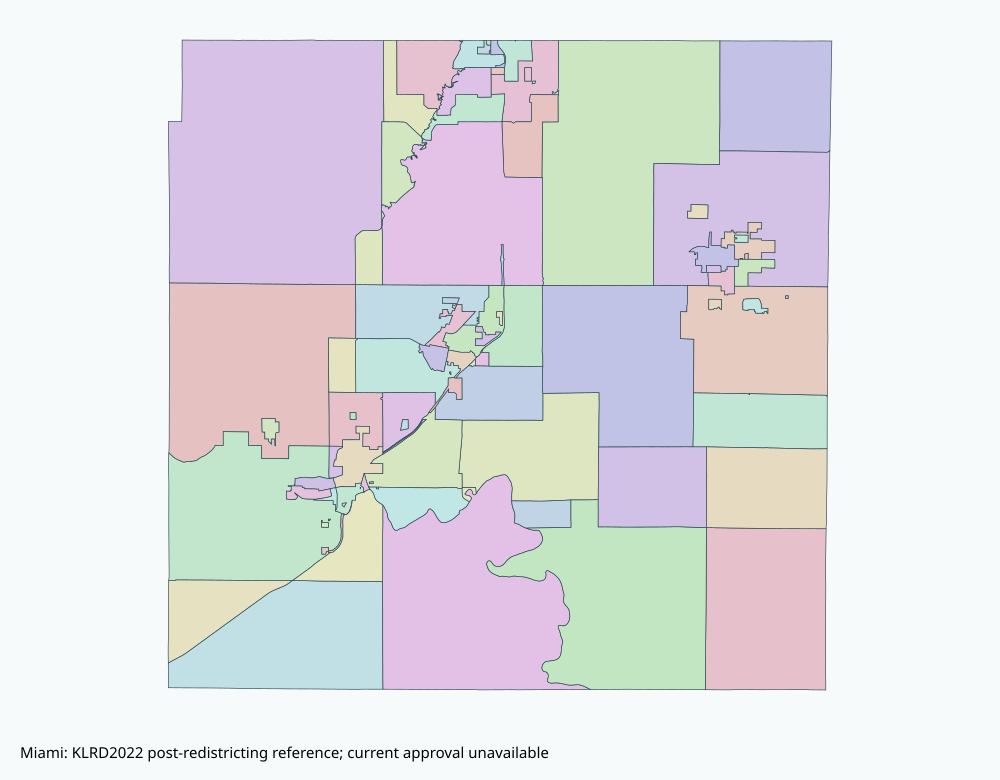
Original native state pages stored once; full county FID list in inventory.json. No current equivalence assumed.
Original state downloadsFull five historical native source families · All map attributes
12. Crawford 20037
Reference; November approval unavailable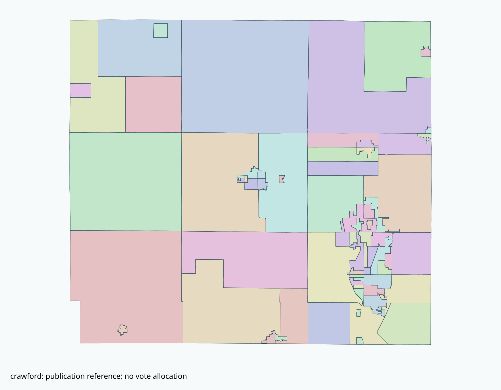
County/reference asset. Open preview for detail.
County election district-maps→actual precinct app/webmap→native Precincts polygon service,61 records.
Vintage: Current publication snapshot; catalog/data clocks retained separately.
Gap: No approved November2026/frozen2024 boundary equivalence. Published polygons retain invalid topology.
Native original response downloads
crawford-features-000 (gzip, 179,443 bytes)
Complete official KLRD2022 county reference: 67 source polygons
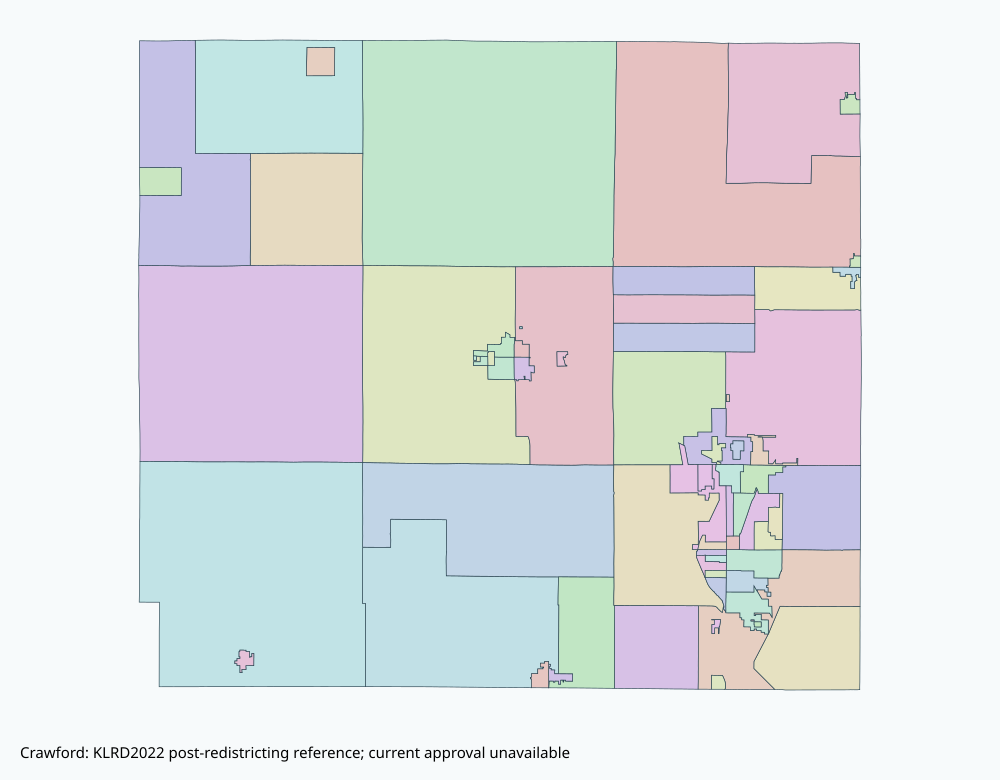
Original native state pages stored once; full county FID list in inventory.json. No current equivalence assumed.
Original state downloadsFull five historical native source families · All map attributes
13. Harvey 20079
Reference; November approval unavailable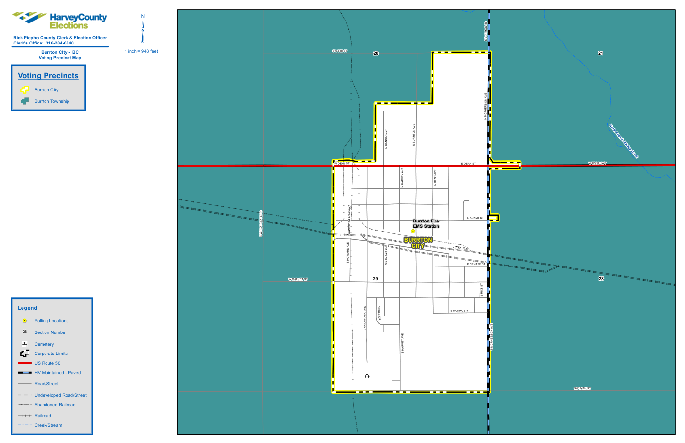
County/reference asset. Open preview for detail.
Official election site elected-officials→complete39-page individual precinct-map PDF; all pages retained/rendered.
Vintage: Printed dates/source names vary by page; current landing text says41precincts, downloaded file has39pages. Page count is not precinct-count equivalence.
Gap: Exact source39-page scope versus county41-precinct roster is unresolved; tiny/split units may need more than one map or share maps, no cause inferred. State2022 reference contains full county source geometries; no currentapproved crosswalk.
harvey-pdf (identity, 8,702,561 bytes)
Complete official KLRD2022 county reference: 58 source polygons
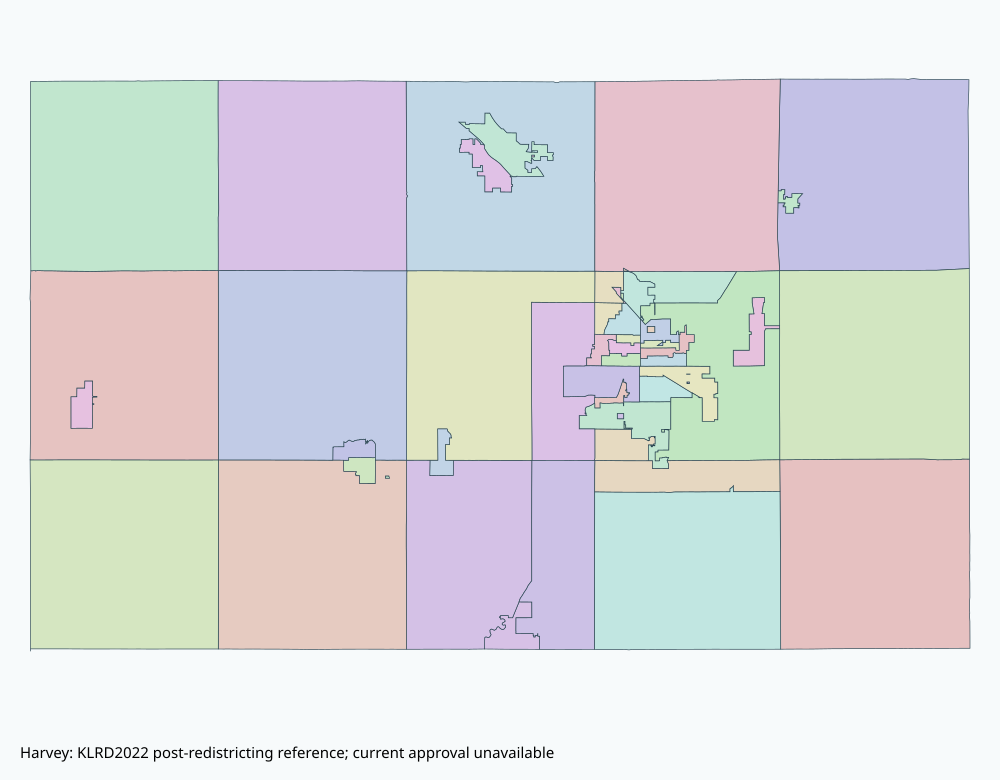
Original native state pages stored once; full county FID list in inventory.json. No current equivalence assumed.
Original state downloadsFull five historical native source families · All map attributes
14. McPherson 20113
Reference; November approval unavailable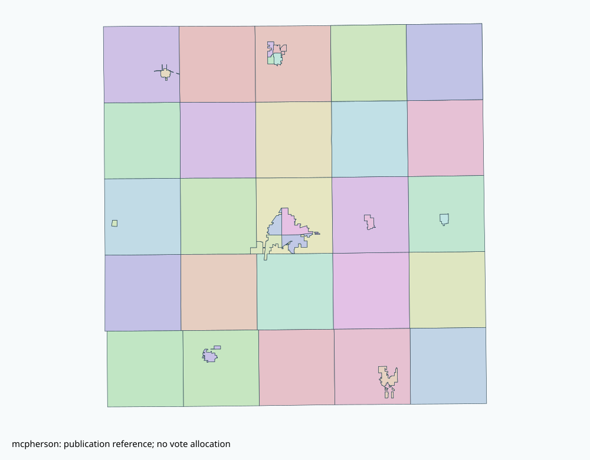
County/reference asset. Open preview for detail.
Official sitemap→Voter Search Map redirect→app/webmap→Voting_Districts layer233,42 records.
Vintage: Current service snapshot; source dates retained per object.
Gap: No November2026 boundary approval or historical/result allocation crosswalk.
Native original response downloads
mcpherson-features-000 (gzip, 53,752 bytes)
Complete official KLRD2022 county reference: 38 source polygons
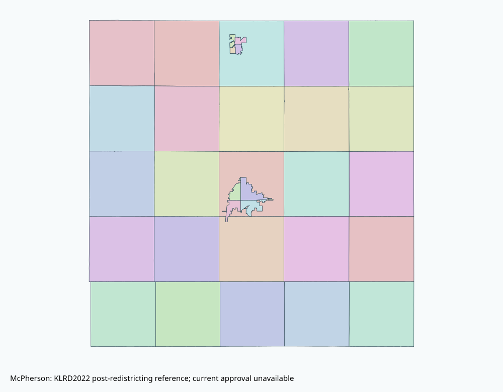
Original native state pages stored once; full county FID list in inventory.json. No current equivalence assumed.
Original state downloadsFull five historical native source families · All map attributes
15. Ellis 20051
Reference; November approval unavailable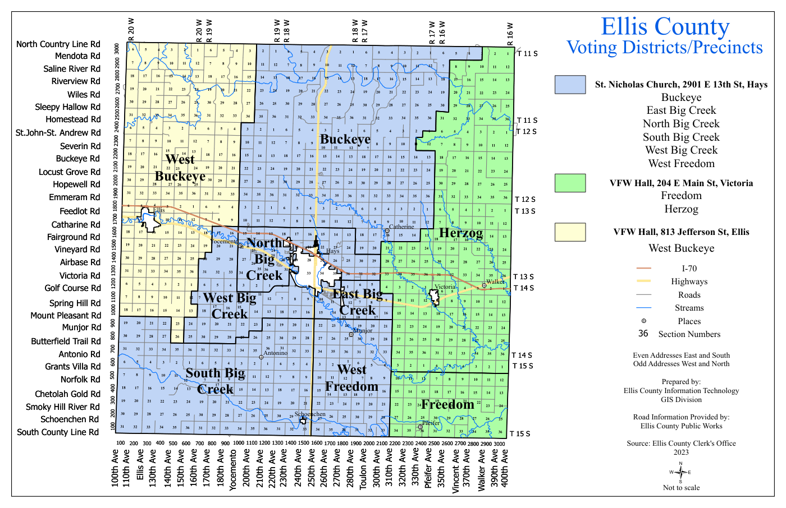
County/reference asset. Open preview for detail.
Official election maps supply rural precinct map and Hays ward/precinct map. Complementary Ellis/Victoria city maps show city/polling context, not independently verified precinct boundaries.
Vintage: Rural map credits county clerk2023; complementary city originals have separate map/PDF clocks.
Gap: Ellis/Victoria city-limit shading is not proof of precinct equivalence. Rural/Hays references credit2023; no approved November2026/frozen2024 crosswalk or machine-native county precinct export.
ellis-pdf (identity, 685,132 bytes)
ellis-city-pdf (identity, 451,417 bytes)
ellis-hays-pdf (identity, 692,130 bytes)
ellis-victoria-pdf (identity, 448,166 bytes)
Complete official KLRD2022 county reference: 50 source polygons
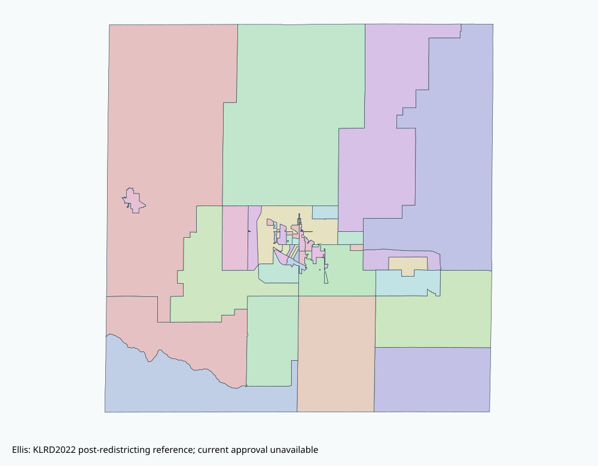
Original native state pages stored once; full county FID list in inventory.json. No current equivalence assumed.
Original state downloadsFull five historical native source families · All map attributes
16. Cowley 20035
Reference; November approval unavailable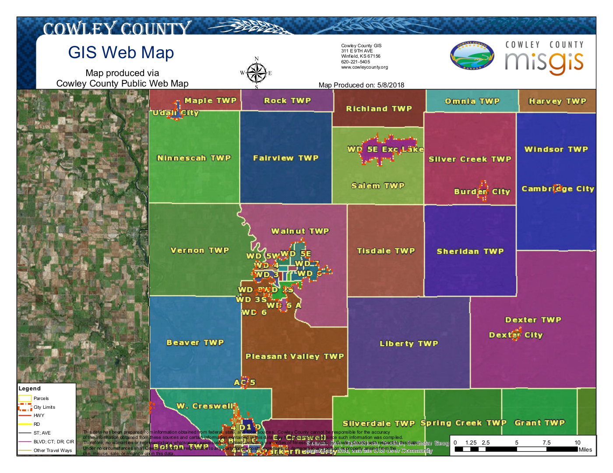
Archived county-produced PDF; historical reference. Open preview for detail.
County-produced precinct map mirrored in UF Election Lab historical archive; secondary-host reference only, plus complete official KLRD2022 native county reference.
Vintage: Actual PDF printed5/8/2018; UF catalog labels2020, archived2024. Keep those clocks separate; not a2026 county original.
Gap: Entire Cowley current/November2026 authoritative precinct map/export unavailable after county election/GIS/Beacon403, candidate PDF URL404 (not observed linked) and bounded county GIS catalog search. Archive provenance not upgraded to current county authority.
cowley-archive-pdf (identity, 531,760 bytes)
Complete official KLRD2022 county reference: 75 source polygons
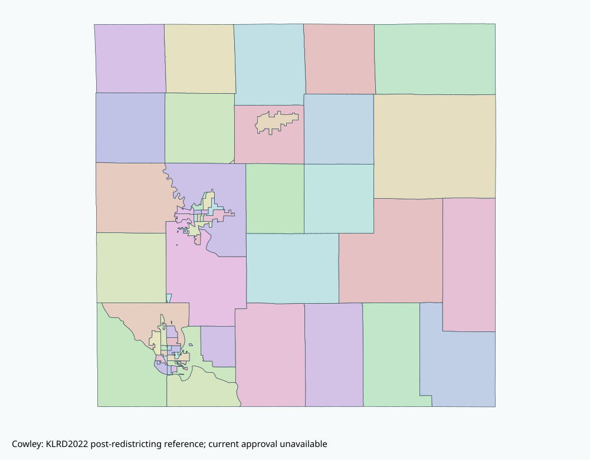
Original native state pages stored once; full county FID list in inventory.json. No current equivalence assumed.
Original state downloadsFull five historical native source families · All map attributes
17. Pottawatomie 20149
Reference; November approval unavailable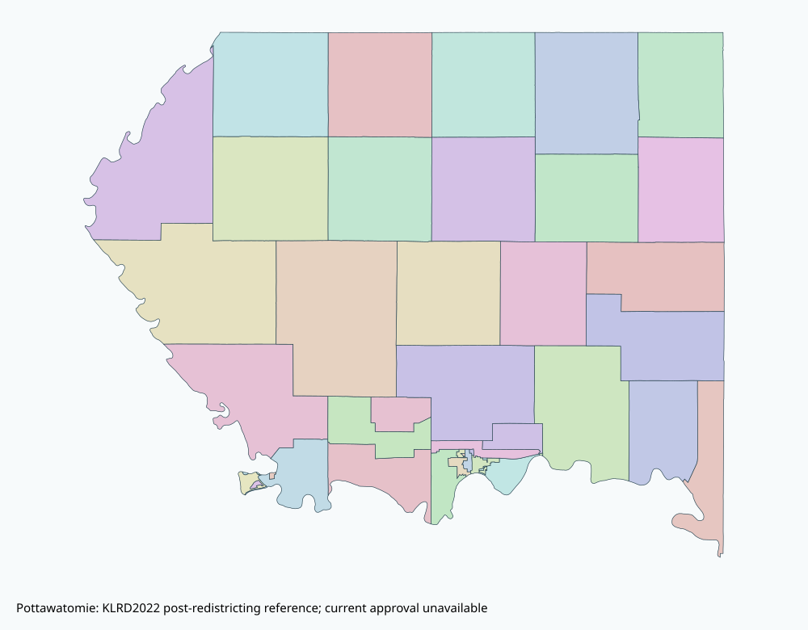
2022 state reference; current county gap. Open preview for detail.
Complete official KLRD2022 native county precinct reference. County GIS currentwebmap contains political townships/cities/districts, not a precinct layer.
Vintage: 2022 post-redistricting reference only.
Gap: Entire county post2022/current/November2026 precinct geometry/map unresolved after electionoffice, districtmaps, GISwebmap and orgcatalog routes. Downloaded legislativePDF is wrongscope and excluded; politicaltownships/countyoutline/pollingpoints never substitute for precincts.
Complete official KLRD2022 county reference: 43 source polygons
Original native state pages stored once; full county FID list in inventory.json. No current equivalence assumed.
Original state downloadsFull five historical native source families · All map attributes
18. Lyon 20111
Reference; November approval unavailable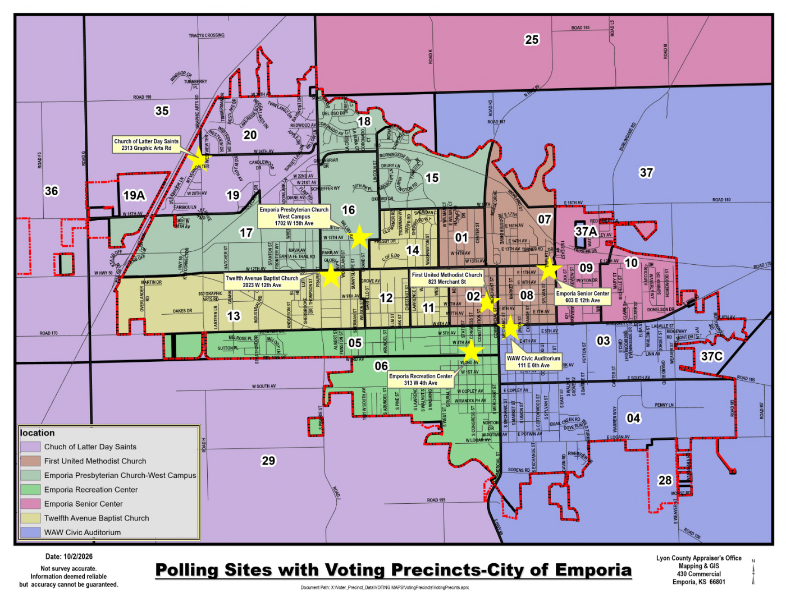
County/reference asset. Open preview for detail.
Actual county election original Emporia and rural precinct map PDFs plus November2026 polling-place-change notice.
Vintage: City printed10/5/2026 (scan); rural printed4/15/2026. Notice specifies generalNovember3,2026.
Gap: Polling notice confirms location change, not legal precinct boundary approval. No historical/current result crosswalk.
lyon-city-pdf (identity, 916,179 bytes)
lyon-rural-pdf (identity, 873,278 bytes)
lyon-notice-pdf (identity, 372,118 bytes)
Complete official KLRD2022 county reference: 58 source polygons
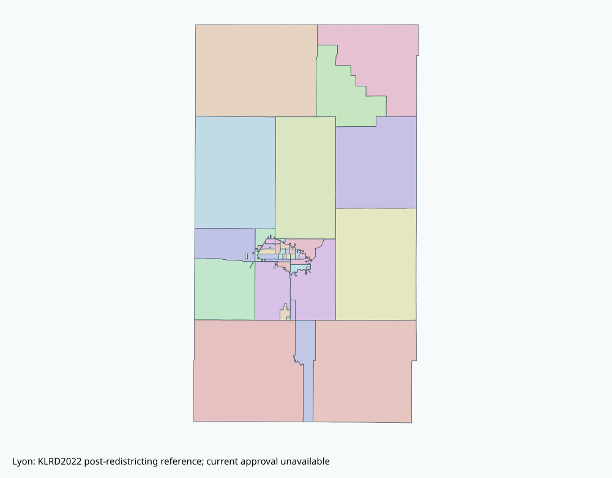
Original native state pages stored once; full county FID list in inventory.json. No current equivalence assumed.
Original state downloadsFull five historical native source families · All map attributes
19. Franklin 20059
Reference; November approval unavailable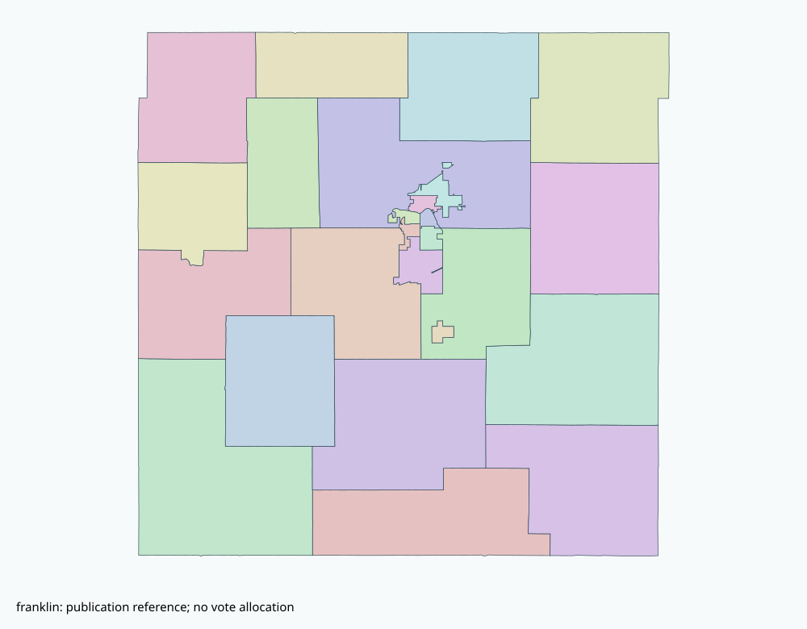
County/reference asset. Open preview for detail.
County GIS Voting & Election Map→Experience→webmap→Voting Precincts native layer2,25 records; pollingpoints and commission layers excluded as polygons.
Vintage: May2026 catalog creation/edit clocks and original2022VTD fields retained; effective November approval unstated.
Gap: No approved November2026 historical-to-current or reporting-unit crosswalk.
Native original response downloads
franklin-features-000 (gzip, 73,392 bytes)
Complete official KLRD2022 county reference: 27 source polygons
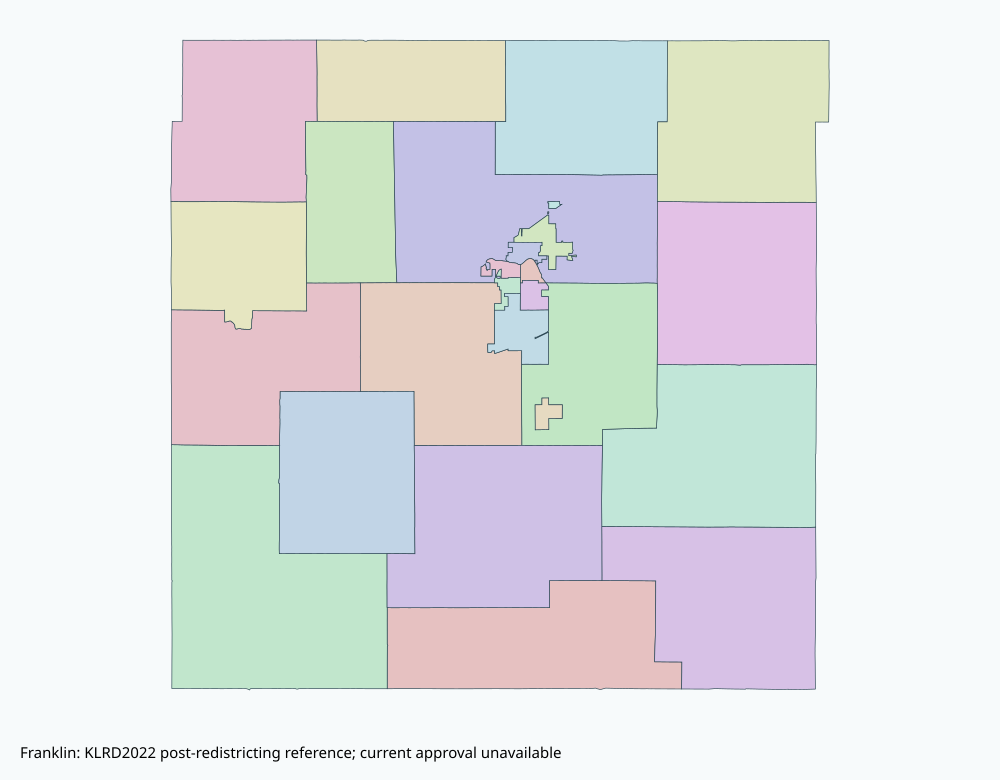
Original native state pages stored once; full county FID list in inventory.json. No current equivalence assumed.
Original state downloadsFull five historical native source families · All map attributes
20. Montgomery 20125
Reference; November approval unavailable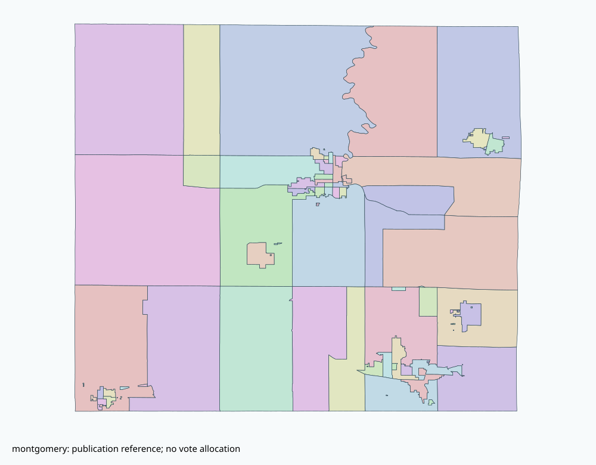
County/reference asset. Open preview for detail.
Agency-attributed Montgomery County Kansas ArcGIS native Precincts and Precinct Parts, overlapping alternatives retained separately.
Vintage: Current published service snapshot, effective election vintage unstated.
Gap: County GIS/maps/election pages do not expose actual outbound link to this service; legacy publicparcel link connection fails. Institutional catalog/org attribution remains a provenance gap. Precinct Parts are never summed with Precincts or votes; official2022state reference retained.
Native original response downloads
montgomery-features-000 (gzip, 158,152 bytes)
Native original response downloads
montgomery-parts-features-000 (gzip, 187,999 bytes)
montgomery-parts-features-001 (gzip, 65,809 bytes)
Complete official KLRD2022 county reference: 84 source polygons
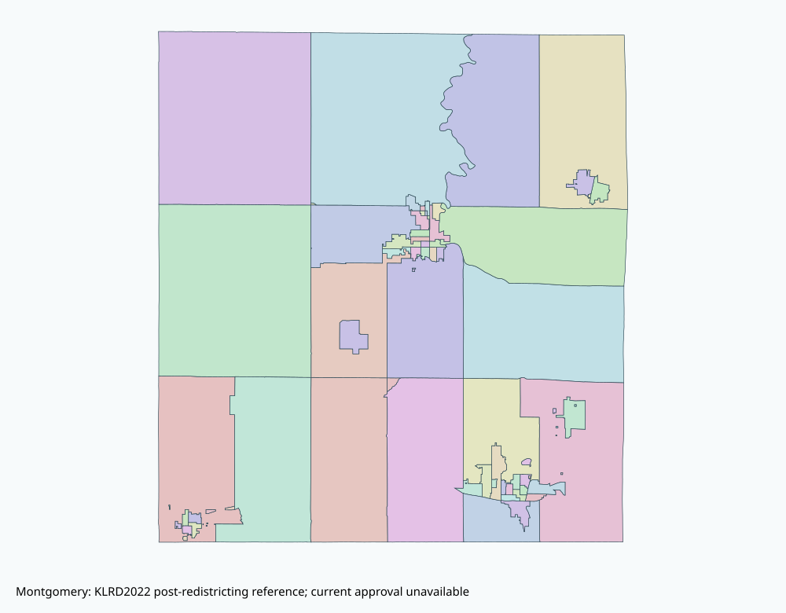
Original native state pages stored once; full county FID list in inventory.json. No current equivalence assumed.
Original state downloadsFull five historical native source families · All map attributes
21. Finney 20055
Reference; November approval unavailable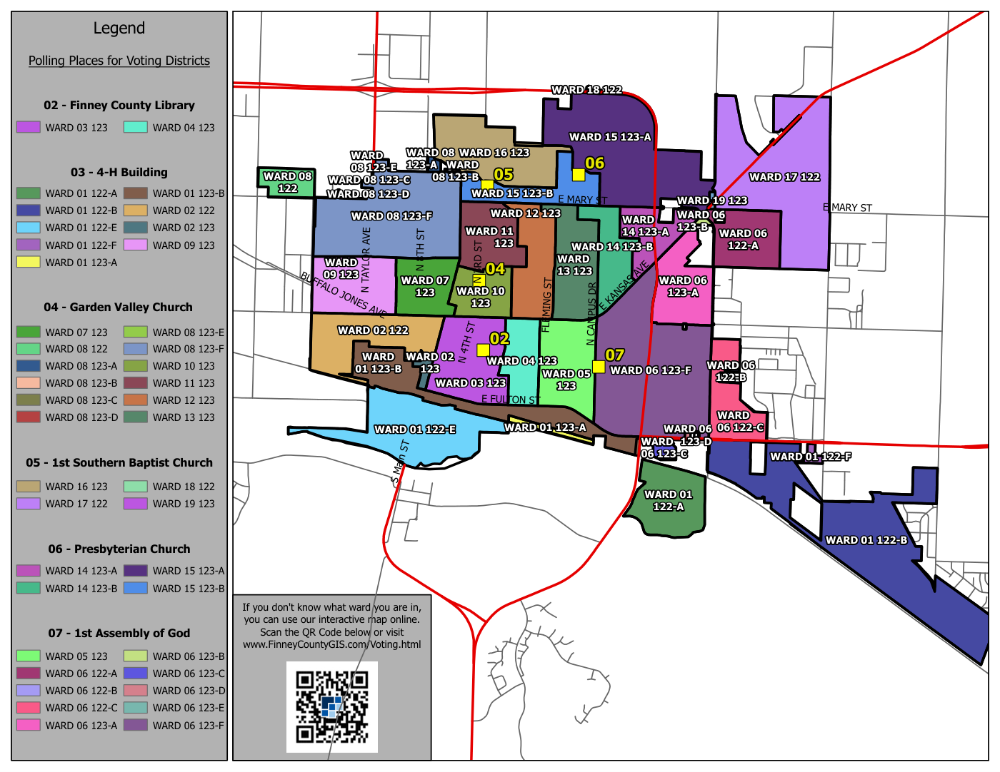
County/reference asset. Open preview for detail.
Electionoffice original city/county Voting Districts and Locations PDFs with full printed ward/district labels.
Vintage: Source filenames/metadata and native legislative-code labels preserved; explicit effectiveNovember approval absent.
Gap: District/precinct parts shown in PDFs are not assumed to equal native result rows. No approvedNovember2026 crosswalk.
finney-city-pdf (identity, 575,608 bytes)
finney-county-pdf (identity, 626,126 bytes)
Complete official KLRD2022 county reference: 71 source polygons
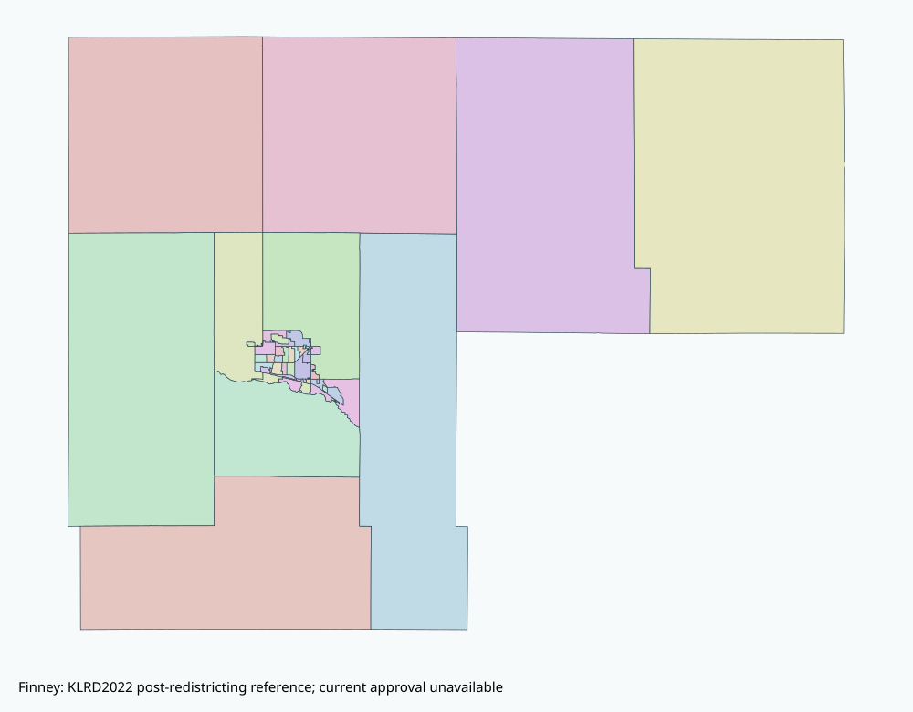
Original native state pages stored once; full county FID list in inventory.json. No current equivalence assumed.
Original state downloadsFull five historical native source families · All map attributes
22. Barton 20009
Reference; November approval unavailable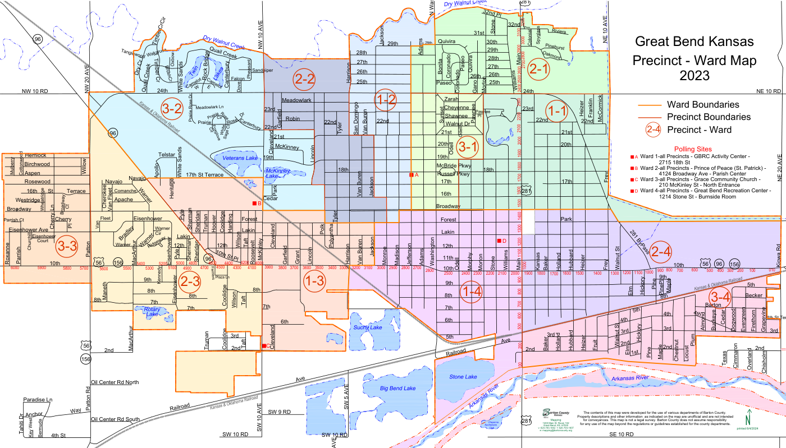
Great Bend city map; county current scope gap. Open preview for detail.
Official GIS Great Bend precinct/ward PDF and Hoisington ward PDF; county Voting Locations map retained as polling-area context only. Full officialKLRD2022county native reference supplied.
Vintage: Great Bend map2023, print6/4/2024; county pollingmapfilenameJune2022; Hoisington dateunstated.
Gap: Current rural/township precinct splits and other towns beyond Great Bend/Hoisington lack qualified current map/export; county polling-area shading is not fullprecinct geography. November2026 approval absent.
barton-city-pdf (identity, 405,118 bytes)
barton-hoisington-pdf (identity, 141,833 bytes)
barton-county-pdf (identity, 628,087 bytes)
Complete official KLRD2022 county reference: 50 source polygons
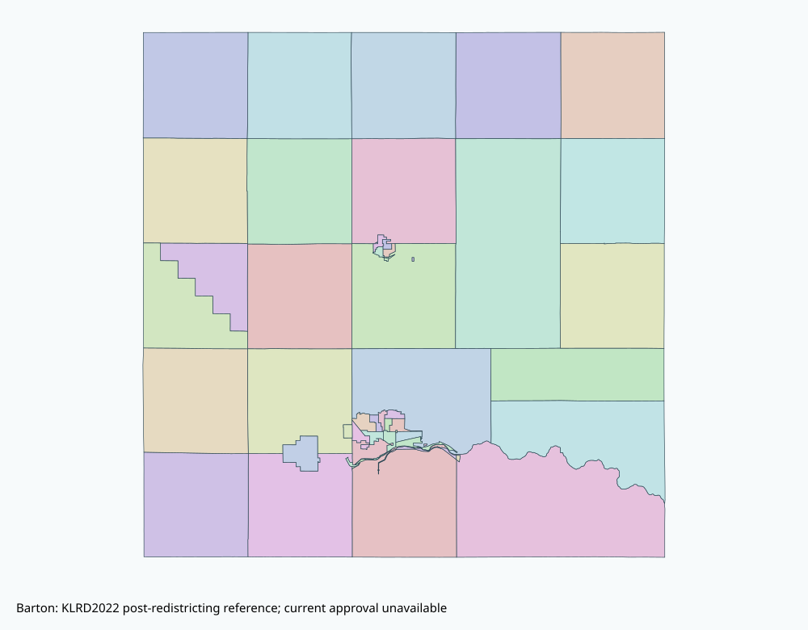
Original native state pages stored once; full county FID list in inventory.json. No current equivalence assumed.
Original state downloadsFull five historical native source families · All map attributes
23. Sumner 20191
Reference; November approval unavailable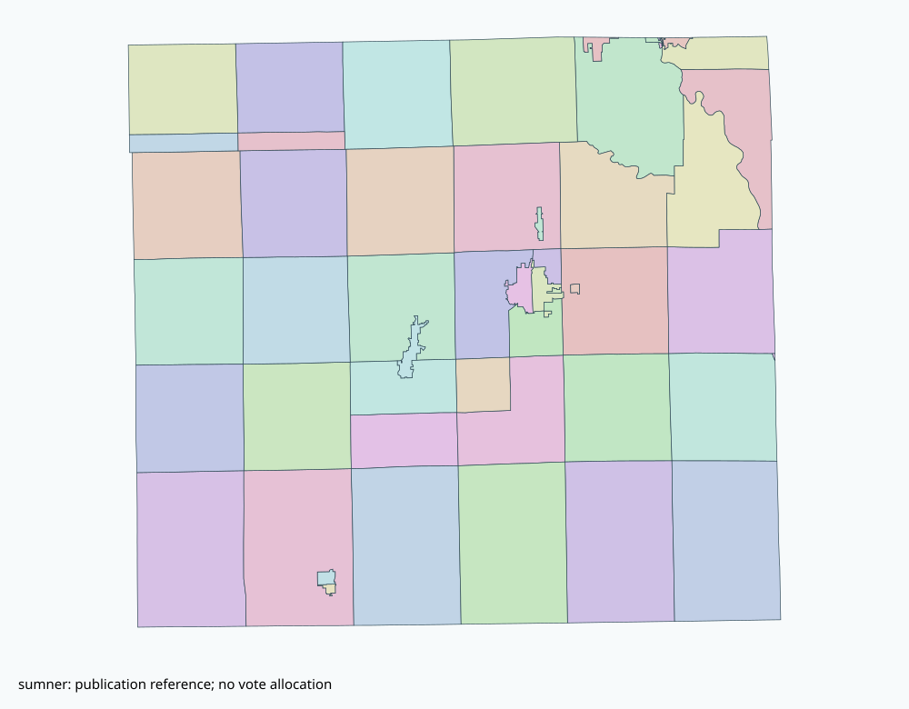
County/reference asset. Open preview for detail.
Agency-attributed Sumner clerk Voting_Districts native layer plus complete officialKLRD2022county reference; actual difference service is pointsonly, excluded as precinct geometry.
Vintage: Clerk catalog createdNovember2025; service dates retained. No election-effective/November2026 approval.
Gap: County election/appraiser/publication pages supply no actual outbound link to clerk ArcGIS product; county-authority linkage/current approval remains gap. State2022 and clerk boundaries are distinct source families; no allocation or inferred cause for differences.
Native original response downloads
sumner-features-000 (gzip, 99,520 bytes)
Complete official KLRD2022 county reference: 65 source polygons
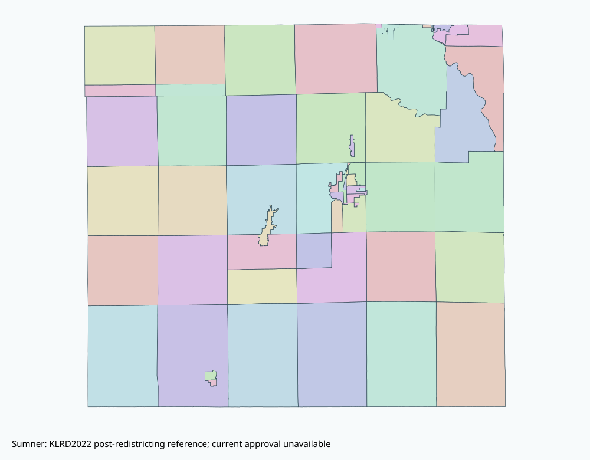
Original native state pages stored once; full county FID list in inventory.json. No current equivalence assumed.
Original state downloadsFull five historical native source families · All map attributes
Offline only. PNG/SVG images are display derivatives. Original PDF, ZIP and Esri JSON response bytes are authoritative. Reconstruct gzip/ordered parts with reconstruct.py; see SCHEMA.md. No external basemap, geocoding or network requests are used by this index.